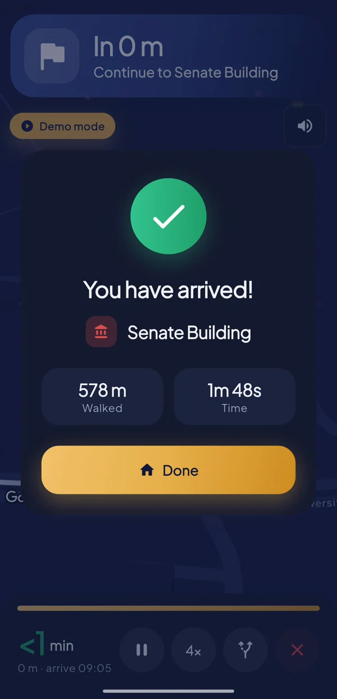
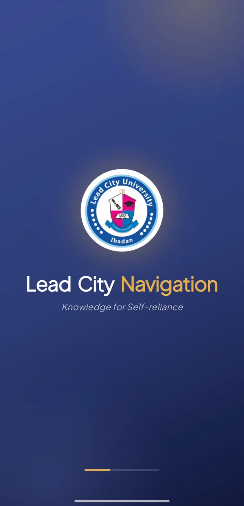
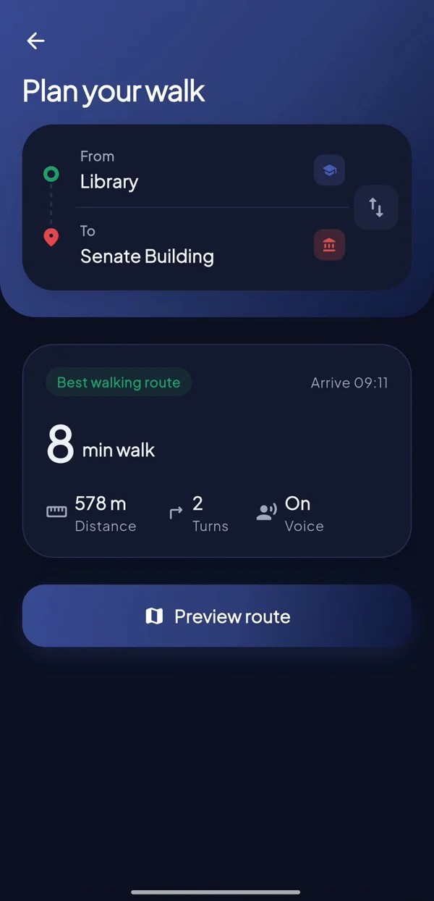
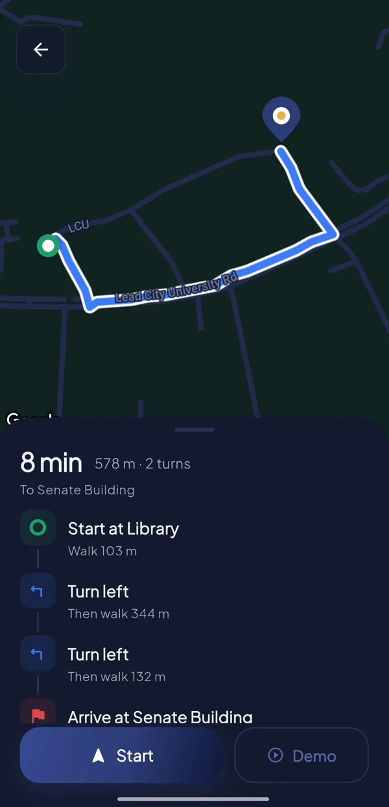
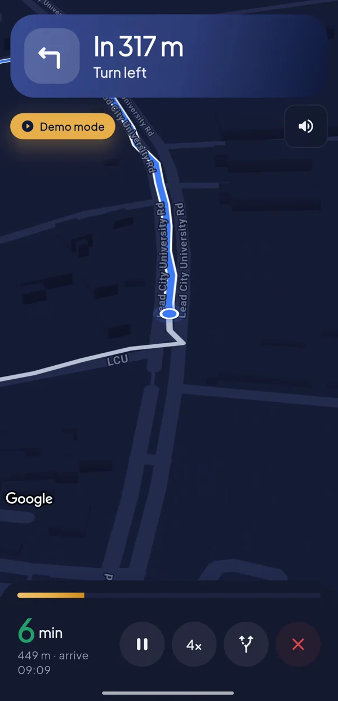

Campus Navigator
Turn-by-turn walking directions for Lead City University, with voice guidance. Every route is calculated on the phone, over a walkway network I traced on foot.


A quick tour
Captured from the app on my phone. Tap any screen to flip through all seven.


New on campus? Good luck.
New students and visitors lose time hunting for faculties, offices and lecture rooms. There was no central digital map of the campus, and general map apps don't know the footpaths between buildings, so their directions follow roads or cut straight through hedges.
Map the campus, then route it myself.
I digitised the buildings and their entrances from satellite imagery, checked them with on-site GPS readings, and walked the campus paths with a GPS tracker to build a walkway network.
The app finds the shortest path over that network on the phone itself, with no third-party routing service, then guides you turn by turn by voice.
From “where to?”
to “you've arrived”
A real trip through the app: Library to Senate Building, 578 m with two turns.
Pick two places
Search any of the campus buildings. The app shows the walking time, distance and number of turns straight away.

See the route
The shortest path is drawn on the map with every step listed, before you take a single one.

Follow the voice
"In 40 metres, turn left." Prompts fire by distance walked along the route, so each turn is called at the right corner.

You're there
A short summary of the distance and time walked. Wander off the path and it reroutes you automatically.
The whole trip in one minute.
Recorded on my phone using the app's built-in demo mode, which walks the route automatically with the same banners, voice prompts and arrival screen. That means the full experience can be shown anywhere, not just on campus.
Navigation is sped up in the edit. Recorded without sound.
Library → Senate
578 m · 2 turns
The engineering
Most of the work is invisible: data, routing and making GPS behave on foot.
Dijkstra, on the phone
Building entrances snap to the nearest point on the walkway network, and Dijkstra's algorithm finds the shortest path. No Directions API, no network round trip. A later optimisation made routing about 50× faster.
GPS that doesn't jitter
A Kalman filter weighs each GPS fix by its accuracy, so a noisy reading barely moves you and the marker stays snapped to the route.
Prompts at the right corner
Turns are detected from the route's shape. You get an approach cue about 40 m out and a "turn now" cue within 15 m, using text-to-speech.
Wander off, get back
If you leave the path, the app notices and recalculates from where you are. Demo mode can simulate a detour to show it.
Satellite to KML
Footprints and entrances were traced from satellite imagery, checked on the ground to within about 5 m, and shipped as a KML file the app parses at startup.